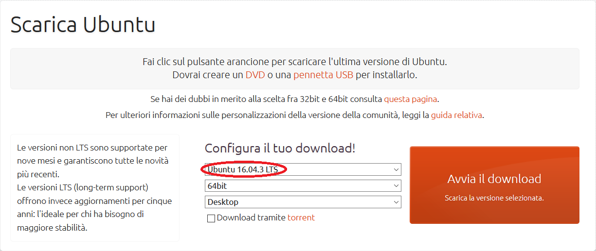
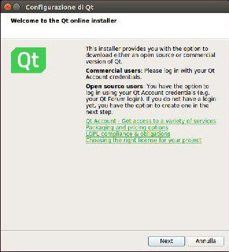
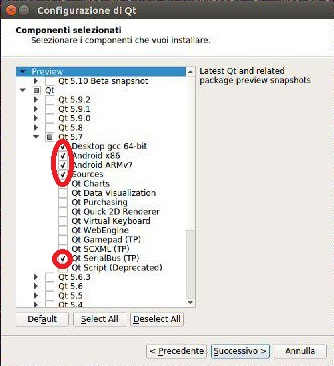
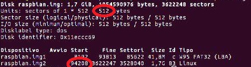
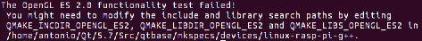
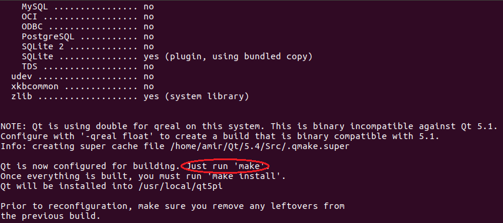
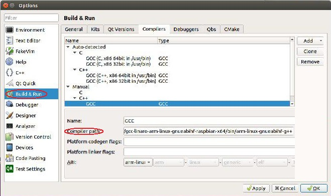

Guida per crosscompilare le librerie Qt per Raspberry¶
Le Qt sono librerie grafiche del c++ che abbiamo usato per programmare l’interfaccia del volante delle nostro monoposto. Ma cosa vuol dire crosscompilare? E perché per Raspberry? La risposta è molto semplice: per mostrare la nostra stupenda interfaccia utilizziamo il single-board computer noto come Raspberry. Questa scheda però non è uguale uguale ai nostri computer, essi infatti utilizzano un processore Intel che, come è facilmente intuibile, utilizza un Assembly di tipo Intel che è strutturalmente diverso dall’Assembly ARM sul quale è basato il processore del nostro Raspberry. Il problema principale è, quindi, che nel momento in cui noi compiliamo il nostro programma che utilizza le Qt, creiamo un eseguibile per Assembly Intel (che ovviamente il Raspberry non è in grado di eseguire), ecco quindi che entra in gioco la crosscompilazione. Avete già capito di cosa si tratta? Nel caso non lo aveste ancora fatto ve lo dico io: la crosscompilazione serve per creare un eseguibile per Assembly ARM e quindi suitable per il nostro Raspberry.
Materiale d’uso¶
Prima di cominciare il nostro viaggio attraverso il selvaggio mondo della crosscompilazione lasciatemi tediarvi ancora un attimo indicandovi il necessario per la buona riuscita dell’obiettivo:
Questa guida è basata per procedere con il materiale elencato precedentemente, se utilizzate versioni diverse di Ubuntu e/o delle Qt non vi assicuriamo la buona riuscita della crosscompilazione.
Ready, set...go¶
Bene, siamo pronti per cominciare la crosscompilazione (finalmente direte voi...bè, ne riparliamo a operazione conclusa). Per prima cosa bisogna installare Ubuntu 16.04.3 LTS x64, di cui potete recuperarne l’immagine a questo indirizzo https://www.ubuntu-it.org/download. Vi comparirà la seguente schermata:
Si può installare Ubuntu anche su macchina virtuale, sinceramente, però, lo sconsiglio a causa della lentezza e dei problemi di spazio che potrebbero generarsi. Come seconda cosa bisogna installare le Qt (versione 5.7), potete recuperarle direttamente dal sito https://download.qt.io/official_releases/online_installers/. Selezionate “qt-unified-linux-x64-online.run”.
Ora aprite il terminale (CTRL+ALT+T) ed eseguite i seguenti comandi:
Una volta fatto ciò vi comparirà una schermata di questo tipo:
Continuate finché non arriverete alla schermata di scelta delle Qt e scegliete, necessariamente, le seguenti estensioni (le altre sono opzionali):
Proseguite, accettate i termini e installate.
Una volta installate ritornate nel terminale ed eseguite i seguenti comandi (in ordine):
sudo apt-get upgrade sudo apt-get update sudo apt-get install libgl1-mesa-dev
dove vi verrà chiesto di continuare premete ENTER. Assicurativi di essere nella cartella generale (se non siete sicuri digitate il comando cd sul terminale), per continuare ora:
*Create la cartella crosscompile-tools:
mkdir crosscompile-tools*Entrate nella cartella ed eseguite:
cd crosscompile-tools git clone https://github.com/raspberrypi/tools.git*Entrate in Tools e date i seguenti comandi:
cd tools wget https://raw.githubusercontent.com/riscv/riscv-poky/master/scripts/sysroot-relativelinks.py chmod +x sysroot-relativelinks.py ./sysroot-relativelinks.py tools*Ritornate alla cartella crosscompile-tools ed installate la libreria lib32z1:
cd .. sudo apt-get install lib32z1
Bene, ora scaricate l’immagine del Raspberry che potete trovare a questo link https://www.raspberrypi.org/downloads/raspbian/, è consigliata la versione lite, ma siete liberi di provare la versione completa, dovrebbe funzionare ugualmente. Copiate poi l’immagine nella cartella crosscompile-tools, vi consiglio caldamente di rinominare l’immagine in “raspbian.img” per questioni di semplicità nell’eseguire i prossimi comandi. Fatto ciò:
*Create la cartella rasp-pi-rootfs in mnt:
sudo mkdir /mnt/rasp-pi-rootfs*Dopo esservi assicurati di essere nella cartella crosscompile-tools montate l’immagine del Raspberry:
fdisk -l raspbian.img*Ora il passaggio può risultare un pochino complicato, cercherò di spiegarvelo nel modo più semplice possibile; dopo aver eseguito il comando di montaggio vi apparirà la seguente schermata:
Identificate il vostro sector size e il blocco di inizio di raspbian.img2. Date ora questo comando inserendo i vostri dati al posto di sector size e blocco di inizio:
sudo mount raspbian.img -o loop,offset=$((sector size * blocco di inizio)) /mnt/rasp-pi-rootfs/*Accedete ora alla cartella tools ed eseguite i seguenti comandi:
cd tools sudo ./sysroot-relativelinks.py /mnt/rasp-pi-rootfs export RPI_SYSROOT=/mnt/rasp-pi-rootfs export RPI_TOOLCHAIN=~/crosscompile-tools/tools/arm-bcm2708/gcc-linaro-arm-linux-gnueabihf-raspbian/bin/arm-linux-gnueabihf-*Adesso comincia il processo che potrebbe dare più problemi:
cd ~/Qt/5.7/Src ./configure -opengl es2 -device linux-rasp-pi-g++ -device-option CROSS_COMPILE=\$RPI_TOOLCHAIN -sysroot $RPI_SYSROOT -opensource -confirm-license -optimized-qmake -reduce-exports -release -make libs -prefix /usr/local/qt5piDato questo comando il terminale dovrebbe rimanere off limits creando il qmake, perciò non preoccupatevi se vi sembra metterci tanto. In realtà, una volta completata la creazione del file, dovreste avere un errore di questo tipo (se non lo avete, tanto meglio):

In realtà, le librerie indicate come mancanti, sono presenti nel vostro computer, solo che sono chiamate in modo diverso da quello richiesto, per risolvere, perciò, basta creare un link a queste:
*Tornate alla schermata proncipale:
cd*Muovetevi fino alla seguente cartella:
cd ../../mnt/rasp-pi-rootfs/opt/vc/lib*Controllate di avere il file (ls) libbrcmGLESv2.so, se è presente create il link con questo comando:
sudo ln -s libbrcmGLESv2.so libGLESv2.so*Tornate ora alla cartella src:
cd cd Qt/5.7/Src
- *Rieseguite il configure precedente:
Tranquilli, dovrebbe metterci molto meno rispetto a prima. Una volta fatto ciò dovrebbe comparirvi la seguente schermata:

Adesso bisogna aspettare: il seguente processo infatti non richiederà meno di 40-50 minuti, anche in base alle caratteristiche della vostra macchina, se ci mette meno di questo tempo o se vengono errori al completamento dell’operazione probabilmente avete sbagliato qualcosa e dovete fare tutto da capo (il mio consiglio è di cancellare anche le Qt e l’immagine del Raspberry). Eseguite i seguenti comandi:
sudo make sudo make install
A questo punto aprite QtCreator manualmente o da terminale, è indifferente, lo trovate nel percorso Qt/Tools/QtCreator/bin. Ora, nella toolbar andate su Tools, Options..., Build & Run, accedete alla tab Compilers e premette Add: selezionate GCC e nel menù a tendina che vi compare selezionate C++. In compiler path inserite il seguente percorso:
/home/nomeaccount/crosscompile-tools/tools/arma-bcm2708/gcc-linaro-arm-linux-gnueabihf-raspbian-x64/bin/arm-linux-gnueabihf-g++
al posto di nomeaccount inserite il nome del vostro account. Questo dovrebbe essere il risultato:
Ora andate nella tab Qt Versions e premete Add e inserite il percorso:
/mnt/rasp-pi-rootfs/usr/local/qt5pi/bin
e selezionate il file qmake.
Fatto ciò, se siete riusciti a fare tutto non mi resta altro che dirvi good job guys!, in caso contrario vi conviene ricominciare da capo.
Grazie ad Antonio Stefani per la guida.